モノリスとマイクロサービス
自己紹介

- 名前：川畑 光平
- 所属：NTTデータ クラウド技術部
- 現在従事している業務
- クラウド技術R&D
- プロジェクト支援
- 海外グループ連携施策・コミュニティ運営
- AWS社内推進・人材育成
- APN AWS Top Engineers & Ambassadors Since 2019
- 書籍・Web連載記事執筆活動 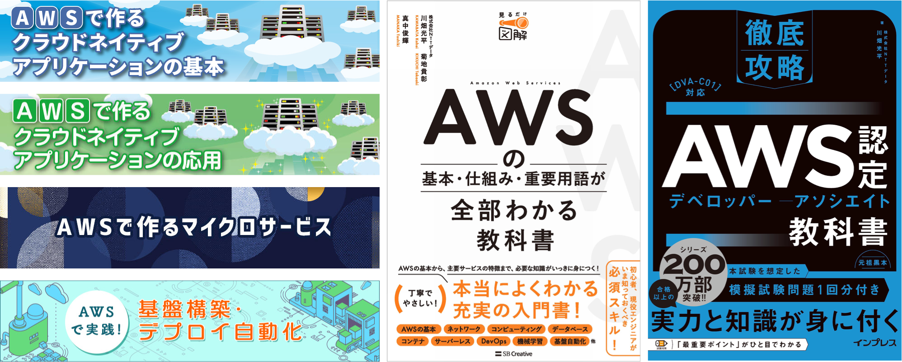
2023.1 一丁前に面倒見たがるオニイやん
- 朝霞市在住(独身の頃は秋葉原に10年在住)
- 趣味・ハマったこと
- [2000〜] ドライブ/読書(時事)/自動2輪/インテリア/Java
- [2010〜] 美味しい店探し/Spring/料理/スノボ/AWS/水泳
- [2020〜] 技術記事・書籍執筆/DQウォーク/子育て/英語
- [2023〜] FF14/子育て
- 長崎県出身
- 大石 現長崎県知事と同級生
- 劇団 EXILEの秋山くんと同級生
- DEEPの前田さんは中学校の先輩
- 学生の頃Appleでバイトしてました(iPodが流行った頃)
- 2016年末に結婚
- 2019.2に長男が誕生 / 2023.1に長女が誕生
このスライドの使い方

※当スライドは 「reveal.js」 を使って、GitHub Pages上に作成
本日の講義のアジェンダ
- オンプレミス・モノリシックアプリケーションとは？
- クラウドネイティブ・マイクロサービスアプリケーションとは？
- クラウドネイティブ・マイクロサービスのメリット・デメリット
- グループワーク
オンプレミスとは?
- もっぱらエンタープライズシステムにおいて、企業の業務を担うために、高度・高価なメインフレームや、汎用的なサーバといったハードウェアを調達して、自社または共同で利用・運営するデータセンタなどにITシステム環境を構成すること
- 提供するシステムの利用ユーザ数やピークリクエスト数、サービスレベルに応じて各サーバのサイジング(サーバの種類やスペック、ストレージ容量などの設計)を行う。
- 一度構成を決めてしまうと、後から変更をいれるのにも相当な労力がかかるため、ある程度の安全率を見込んで構成しておく
モノリシックアプリケーションとは？
- アプリケーションアーキテクチャにおける、従来からのモデルであり、複数の機能・処理から構成される
- 基本的に単独のアプリケーションとしてデプロイされ、一つのトランザクション処理単位が、アプリケーション内で自己完結するようデザインされる。
例)モノリシックアーキテクチャで構成されるインターネットバンキング(IB)
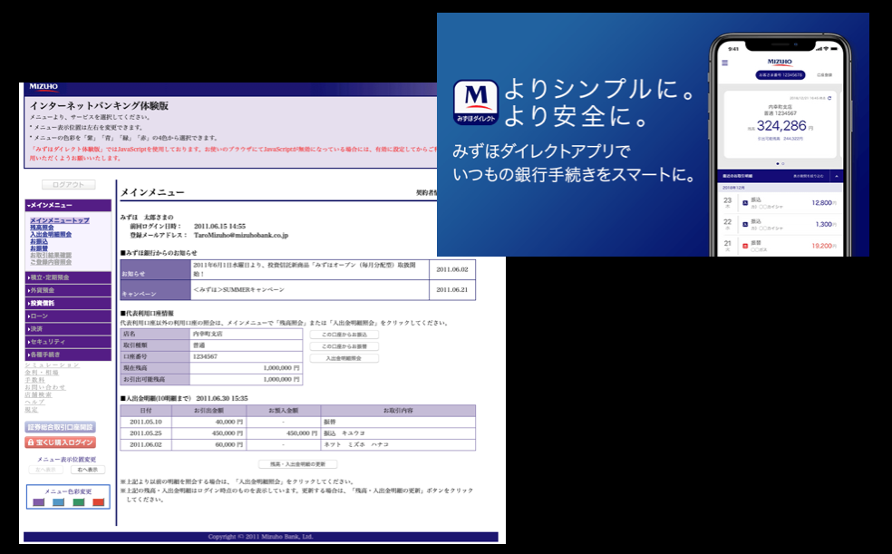
講師とそのフレンド2名に、お金の貸借があり、それぞれがIBを使って支払う。
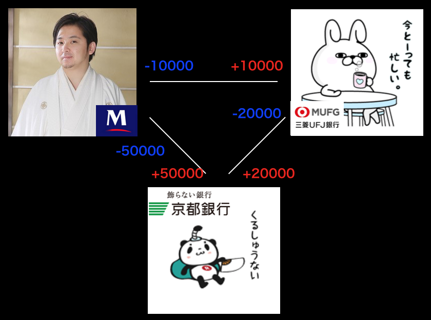
「振込」が行われるシステムの全体像
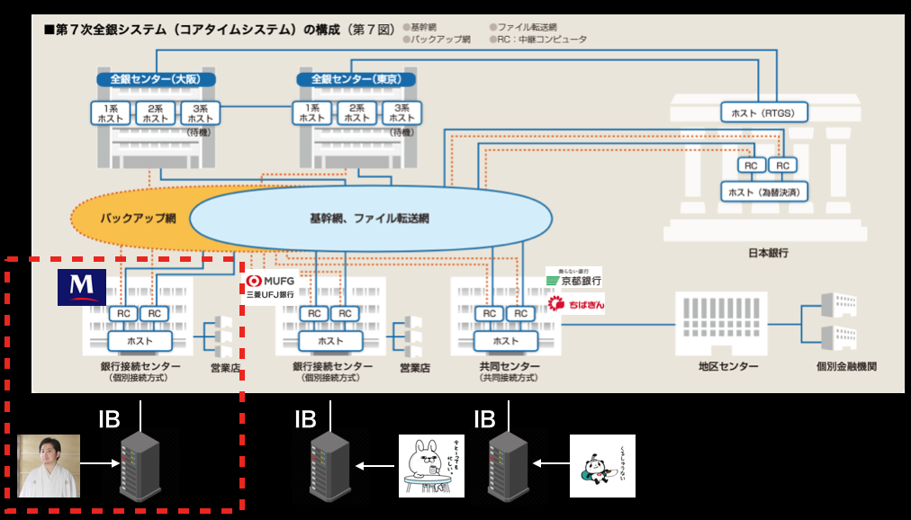
銀行の代表的なシステム構成
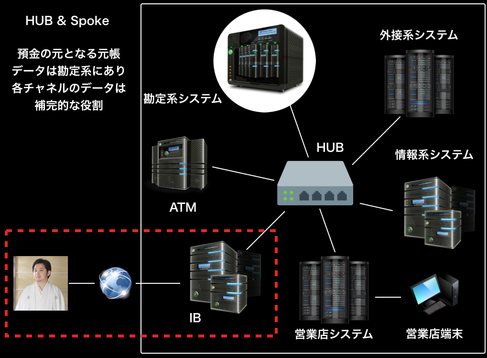
IBのシステム構成
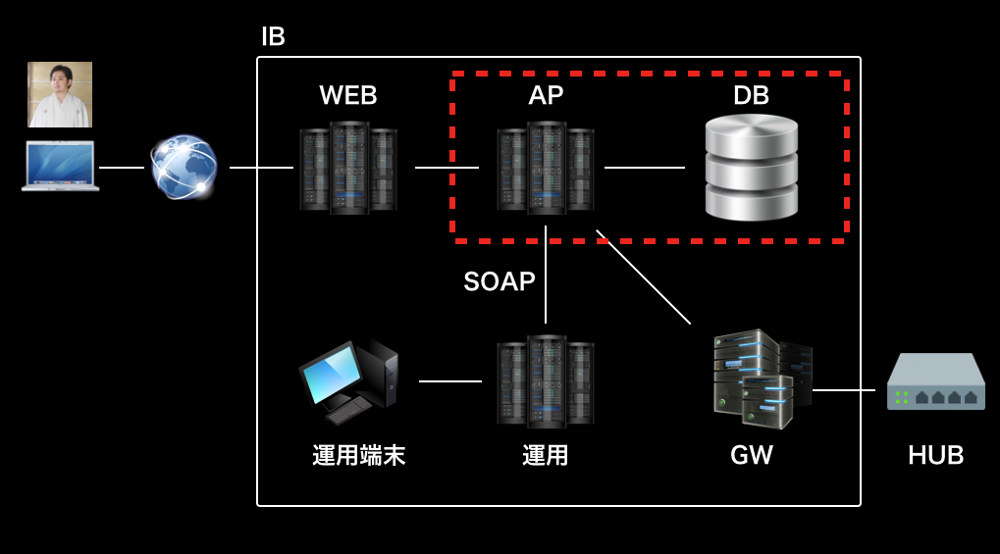
IBのモノリシックアプリケーション機能構成
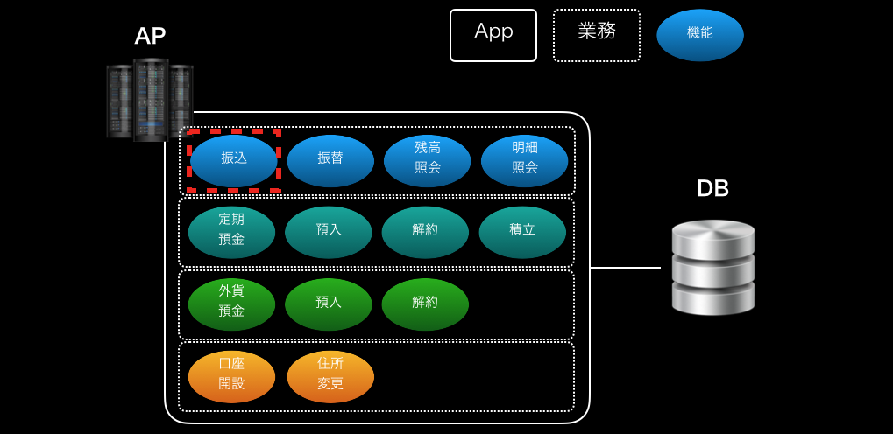
IBにおける振込のユースケース
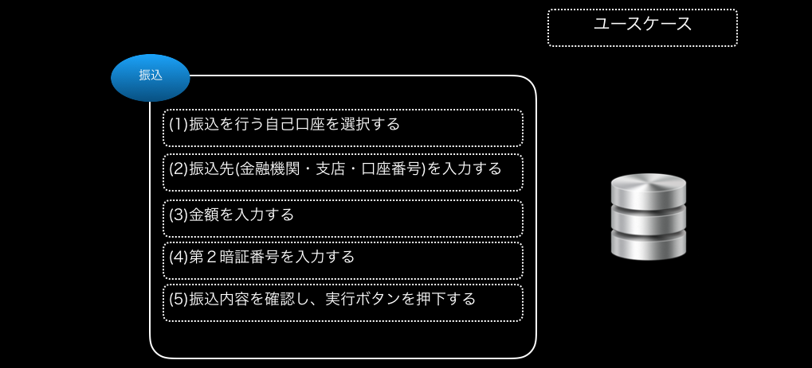
ユースケースを実現するIBの振込関連処理
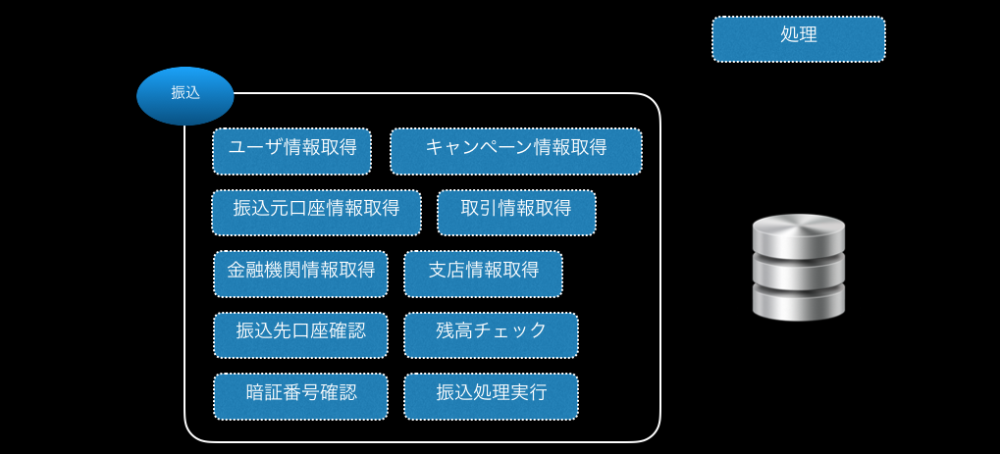
IBを使った振込処理の流れ(IB→勘定系システム)
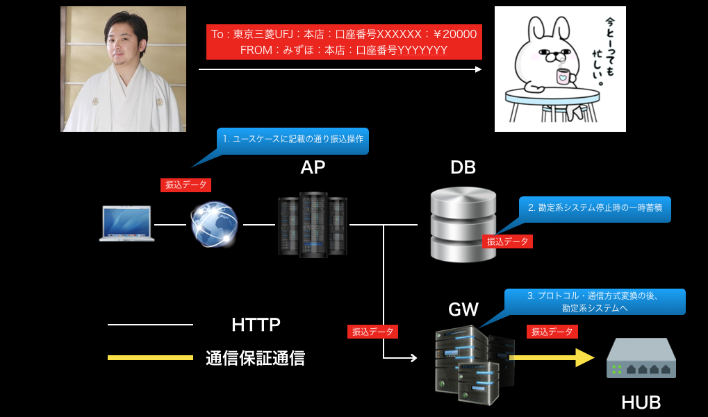
IBを使った振込処理の流れ(勘定系システム→RC)
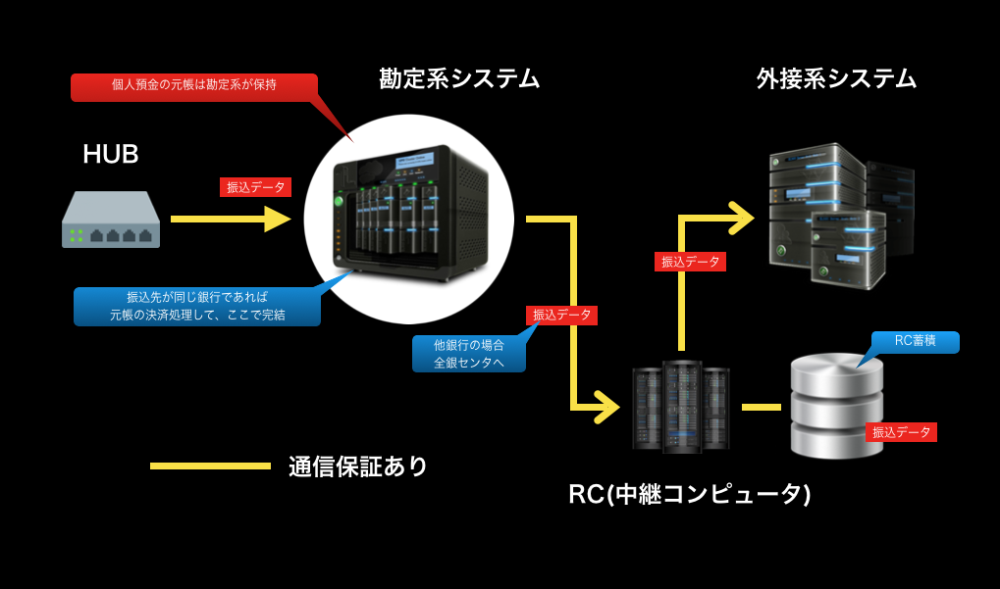
IBを使った振込処理の流れ(RC→全銀)
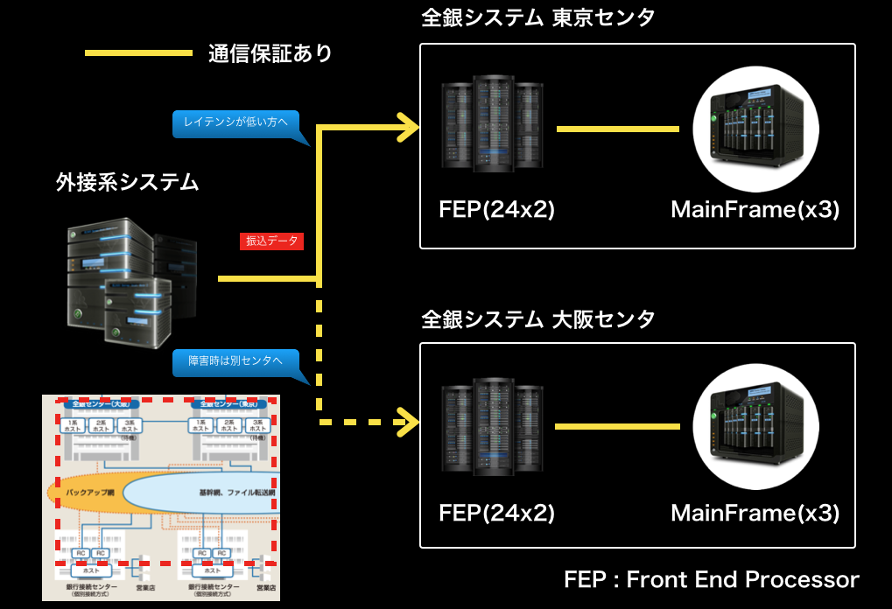
全銀におけるネッティング処理
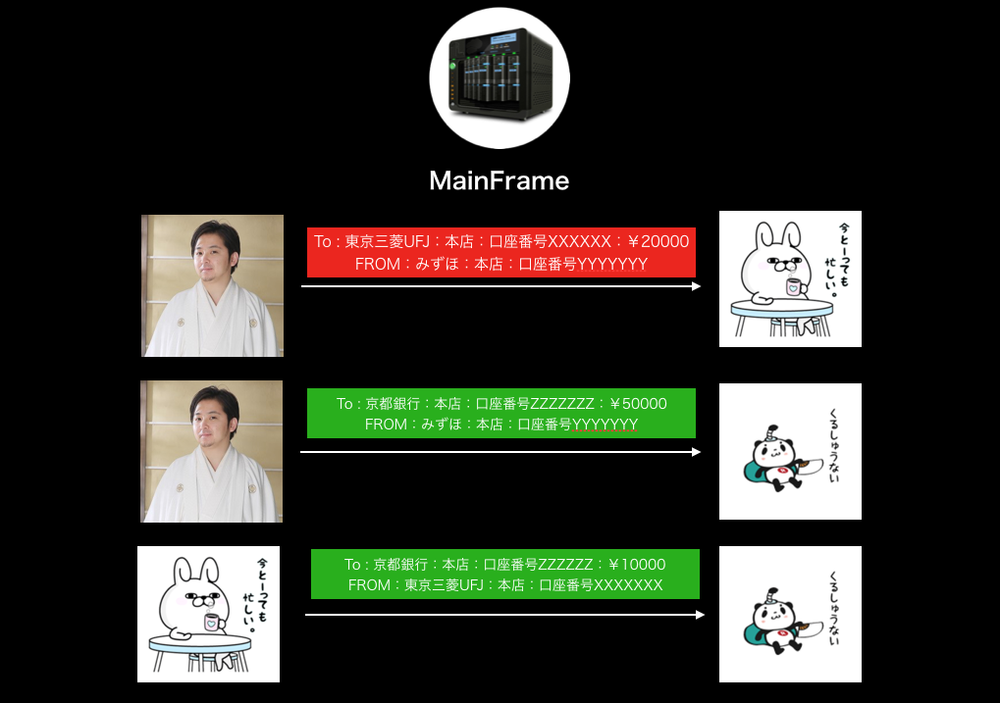
全銀におけるネッティング処理
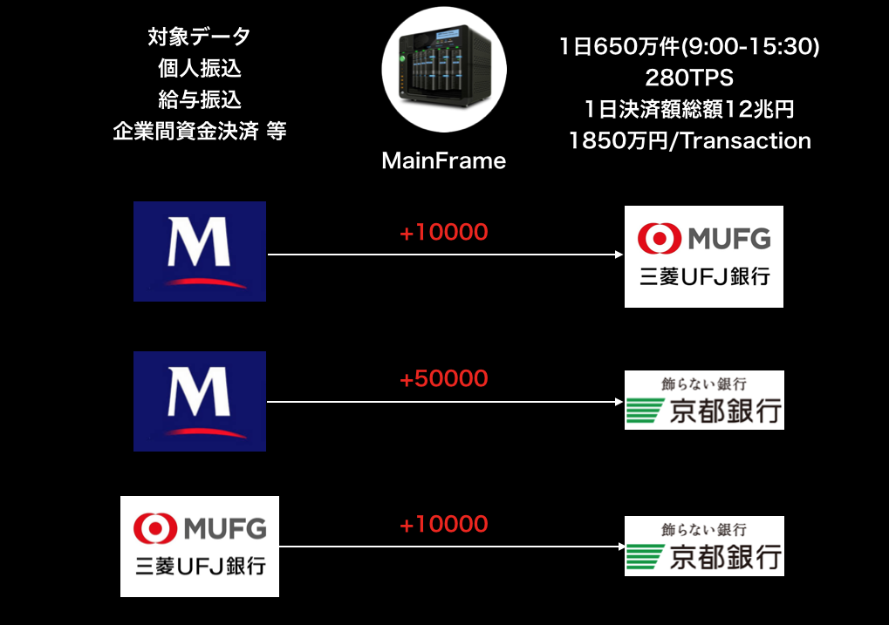
全銀におけるネッティング処理
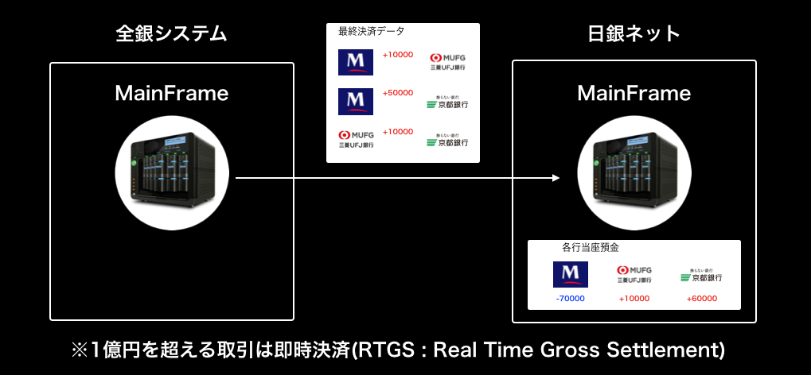
IBを使った振込処理の流れ(全銀→振込先対象の銀行(非仕向先銀行))
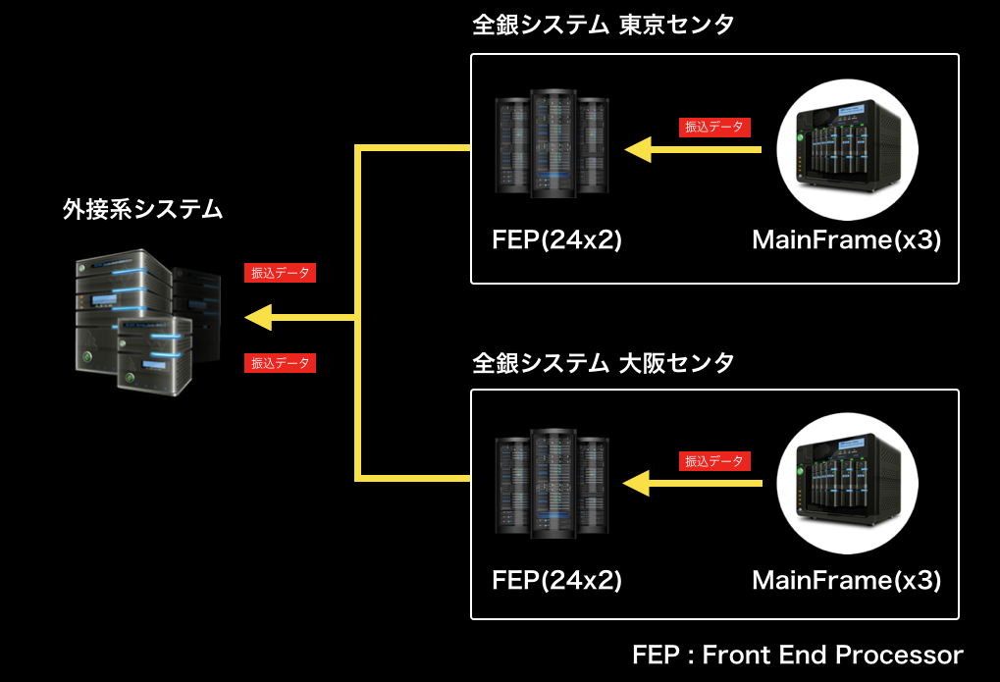
IBにおける振込におけるポイント・補足事項
- 別の銀行向けの振込は簡単にロールバックできない(トランザクション自体を消せない。「組み戻し」するには別途手数料。)
- 勘定系システムは運転時間が決まっている。停止時間帯はIBのDBでデータをため込んで、営業日のオンライン時間になったら時間起動バッチで処理が実行される。 (2018年10月からモアタイム(営業日の15:30以降も処理を受けるシステム)ができたので、停止時間は各銀行次第)
- 個人の預金データの元データ(元帳)は勘定系システムにある。IBのDBでは、勘定系システムが停止している時間帯のデータ取得(金融機関情報、支店情報等)に加えて、トランザクションの記録が主な用途。
- 一つのシステムで業務トランザクションが完結するわけではない。各システムでの連携は、システムダウンを想定し、信頼性・可用性を高めたシステム構成でデータを永続化し、トランザクションデータを連携する。 各システムのトランザクションデータは結果整合性により担保される(そのリスクは銀行が負っている)。
- キャッシュレス決済等、同じ資金決済データでも、一件あたりのトランザクションの金額が大きい(ミッションクリティカルなシステムとしては国内最高レベル)。1件でも不具合は許されない。 なお、基本的に決済は種類によって適用する法律が決まっている(資金決済法、銀行法、割賦販売法、外国為替に関する法律)ため、クラウド化を検討するにもシステム構成に注意が必要である。
オンプレミス・モノリシックの本質
- 昔ながらにあるモノ・やり方だが、決してダメなモノではない
- 安定した・パブリッククラウドより安全な環境でWebサービスを提供することができる
- やり方を工夫すれば、アジリティを得ることもできる。ただし、物理的に環境を作らないといけないので、初期構築や構成変更に時間がかかることは確か。
- 万能包丁・銀の弾丸はない、優先度を見極め、機能・非機能要件に応じて、クラウド・オンプレ/モノリス・マイクロサービスどっちも使い分けれることが重要。
参考資料
クラウドネイティブとは?
- クラウド環境の特性を最大限活かす技術や手法、要素(コンテナを使っていればクラウドネイティブというわけではない)
- 伸縮自在のスケールにより、開発・構築・運用コストの最適化が図れる
- ビッグデータ・大規模並列処理、AIや機械学習、ブロックチェーン、API連携などクラウドを利用することで付加価値が備わる
- 銀の弾丸ではない、特にパブリッククラウドは新たなセキュリティ脅威に晒されたり、プライバシーなど非機能要件の達成するために、オンプレミスより柔軟性を欠く場合もある
マイクロサービスとは?
- 開発チームごとに分担した各サービスの疎結合性／独立性が向上し、開発のアジリティが向上する
- 使用頻度の高い特定の機能を、サービス単位でスケールできるため、アプリケーションパフォーマンスが向上する
- 独立したサービスの集合でアプリケーションが構成されるため、特定のサービスが障害などで機能不全に陥ってもシステム全体が機能不全に陥ることはなく可用性が向上する
- Webアプリケーション、モバイル、運用端末といったマルチクライアントに加え、サードパーティサービスに利用されることを想定し、ビジネスロジックを切り出してAPI化できる
- 以下の選択肢から最も近い答えを選択ください。
- はい！やったことあります/今やってます！
- クラウドなら使ってます
- マイクロサービスチックに作ったことはあります！
- いえ、オンプレミスでモノリシックなアプリケーションなら
- いえ、そもそもアプリ開発の経験がありません
- 左のQRコードをスマホなどで読み取ってください
- スライドを開いている方はこちらのリンクから
UseCase : オープンAPI
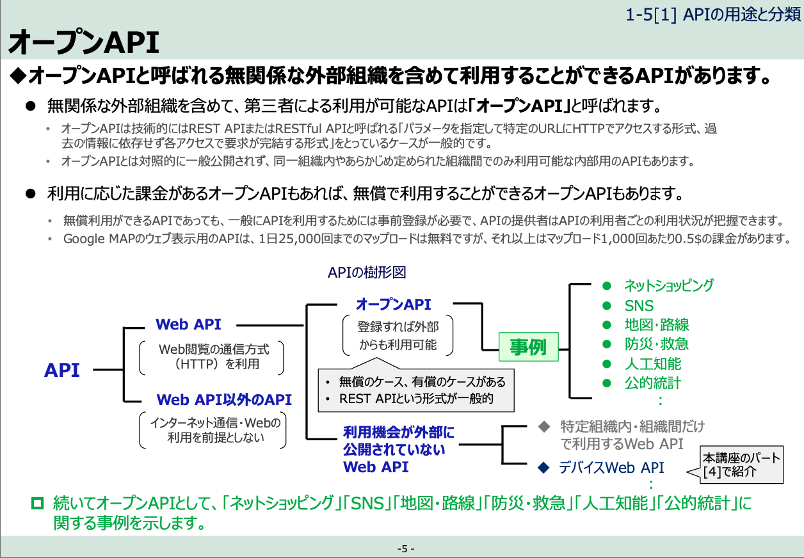
銀行業界におけるオープンAPI
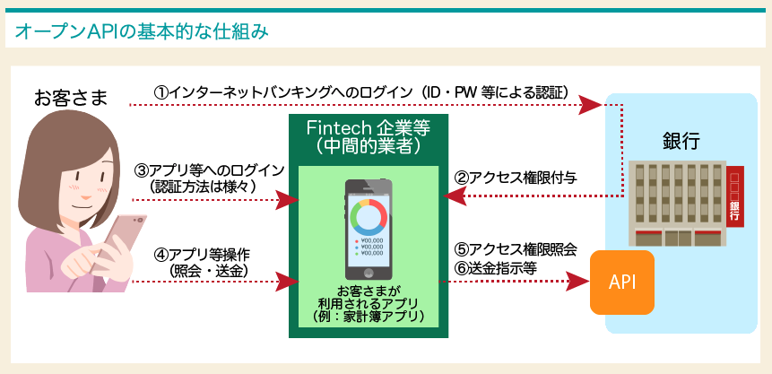
押し寄せる金融業界におけるオープンAPI化の波
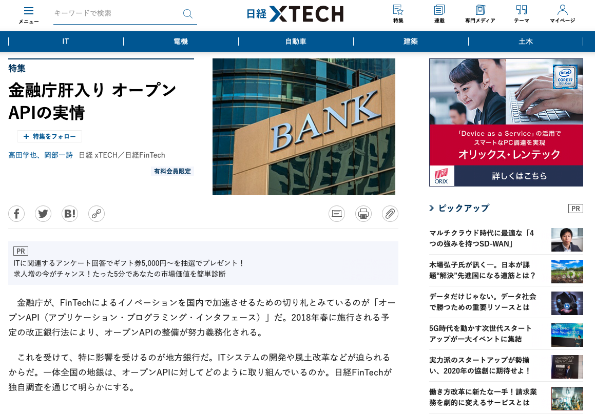
クラウドネイティブ・マイクロサービスアーキテクチャ化を考えよう
振込処理をマイクロサービス化する一例
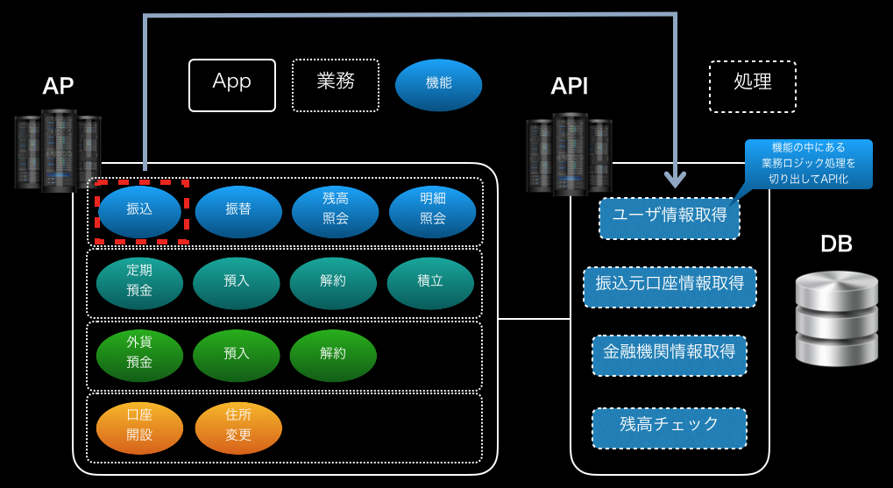
API化・マイクロサービス分割の主な指針・考慮点
- 様々なアプリケーションからの利用を想定したユースケースに応じAPIを定義、既存アプリケーション内でドメイン(業務)ロジック処理を分離し、分離したロジックをAPIでラップするイメージで実装する。 基本的にドメイン(業務)単位でAPIアプリケーションを構成する。
- アプリケーションの分割単位は部門／部署や開発プロジェクト体制といった点も考慮し、相互の影響が最小化するよう、データベースも含め分割を検討する。 ただし、厳密な一貫性が求められるデータは無理にデータベース分散させず、ACIDトランザクションが機能するよう構成する。
- 業務横断的(チームを跨ぐくらいの)処理の共通化は考えなくて良い。過度の共通化はマイクロサービスのメリットであるアジリティ向上、影響範囲の極小化が損なわれる。
- 各APIの想定アクセス数に応じて、頻度が大きいものはスケールでき、性能拡張がしやすいよう構成することを検討する。
- SLA(Service Level Agreement)や、ビジネスインパクトが大きいAPIがあれば、信頼性・可用性高く構成する。
どんなときに使うべき？
クラウドネイティブ・マイクロサービス
- 新しいビジネスをWebサービスとして立ち上げ、ユーザのフィードバックを迅速に取り込みながらWebサービスの向上・拡充を図りたい
- 既存のレガシーなアプリケーションをモダンに作り替えて、機能の一部をサードパーティに公開して新たな収益源としたい
- クラウドにデータを収集し、集約や加工・分析を施して、別のWebサービスとAPI連携させて新たな付加価値を産み出したり、ユーザエクスペリエンスを高めたい
クラウドネイティブ・マイクロサービスの利点
- 素早くビジネスを立ち上げるため、Webサービスを実現するアプリケーションをクラウド環境上に構築する
- 新機能の開発やユーザのフィードバックを迅速に取り込み・反映するため、アプリケーションを細分化して疎結合に構築する
- サービスの利用が増えてきた場合に備えて、利用頻度の高いものをスケール可能にしてビジネス機会を逃さないようにする
- 何らかの理由でサービスを中止する場合も、他に影響なく簡単に破棄できる
複雑性とのトレードオフ
| アーキテクチャ課題例 | 詳細 |
|---|---|
| サービス実行フロー制御 | 処理のオーケストレーション／コレオグラフィといったサービス実行フロー制御、エラーハンドリング方式 |
| トランザクション管理 | 複数の更新系Backend Serviceを実行する場合の業務トランザクションのロールバックや補償トランザクション |
| ステートフル共有データストア | アプリケーションにスケーラビリティを持たせることを目的に、ステートフル(状態)データを共有するためのデータストアの利用や、データストア障害に伴うフェイルオーバー発生時のエラーハンドリング |
| サービスディスカバリ方式 | マイクロサービスが動的にスケールアウト／縮退する場合のBackend Service APIのサービスディスカバリ |
| サービス間通信方式 | Backend Service APIを呼び出す場合の同期／非同期の使い分け、リトライ／サーキットブレイカー処理 |
複雑性とのトレードオフ
| アーキテクチャ課題例 | 詳細 |
|---|---|
| サービス認証／認可方式 | OIDC、OAuth2.0に準拠した、JWTを使ったアクセストークンの連携方式 |
| ロギング／モニタリング方式 | アプリケーション／サービスを跨いでトレーサビリティを確保するためのロギング、各サービスごとのモニタリング |
| Backend Serviceステートレス化／冪等性 | スケールアウトを容易にする、Backend Serviceのステートレス化を前提としたREST準拠API規約／ルール(HTTPステータスコードなど)、耐障害性向上のための冪等性をもつ処理実装 |
| クラウドマネージドサービス連携 | 揮発性であるコンテナ／サーバレス環境下で、データ永続化のためのマネージドストレージやキューを利用する場合の方式 |
| マルチクライアントにおけるサービス分割 | Webアプリケーション以外にも、モバイルなどのSPAクライアント、サードパーティサービス連携がある場合のサービス分割／ビジネスロジックの分離方針 |
グループディスカッション
あなたの担当するシステムでは、
どんなときに使うべき？
クラウドネイティブ・マイクロサービス
- ご自身の携わる業務やシステムの中で、これはクラウドネイティブ・マイクロサービスにすべきだというものがあるか考えてみてください(業務で携わってなければ、自分の身近なWebサービスなどでも可)
- なぜ、そのように考えたのか、そうすることで、どのようなメリットが見込まれるのかを整理し、グループのメンバーに(お客さまにするつもりで)説明してください。
- 逆にクラウドネイティブ・マイクロサービスにすることで好ましくないことが発生しないか、逆にしない方が良いものがあるか考えてみて、グループメンバーと議論してみてください。
- グループメンバーは、お客さまの立場になってその意見に賛成できるかどうか考えてフィードバックしてあげてください。
- いくつかの意見の中で、チームとしてひとつ「マイクロサービスとしてみると良い業務を何か」、ピックアップして発表準備してください。